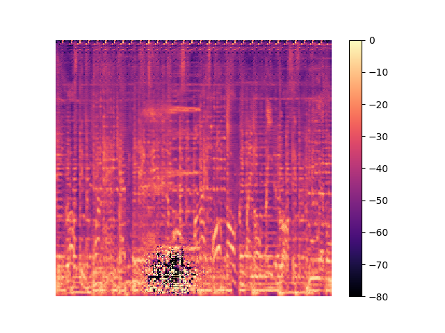

Muusika saate genereerimine tingimusliku vastandgeneratiivse närvivõrgu abil
Priidik Meelo Västrik
Juhendaja: Anna Aljanaki
Sellel lehel saab kuulata spektrogrammidel põhineva muusikat genereeriva mudeli tulemusi.
Mudel on treenitud kasutades andmeid MusDB andmebaasist. Sisendiks on lugu ilma trummideta ning baastõeks terviklik lugu.
Kõikidel järgnevatel helinäidetel on vasakul pool sisendheli, keskel genereeritud heli ja paremal pool sihtheli ehk sisendheli originaalne versioon.
Tulemused 95 epohhi järel
Sisend
Väljund
Baastõde


Siin on hea näide, kuidas mudel lisas rahulikumale loole tagasihoidlikumad trummid. Originaalses klipis polegi trumme.


Müra väljalõikamine 100 epohhi järel genereeritud tulemustest
Kui tulemusse jäävad mürapiirkonnad, saab need lihtsa lahendusena välja lõigata, mis teeb tulemuse veidi kuulatavamaks, kuid siiski mitte heaks.
